C. R. Rao
"All knowledge is, in final analysis, history.
All sciences are, in the abstract, mathematics.
All judgements are, in their rationale, statistics."
-- C. R. Rao (1920-)
Three breakthrough contributions of Rao's 1945 paper: Radhakrishna Rao, C. "Information and accuracy attainable in the estimation of statistical parameters."
Bulletin of the Calcutta Mathematical Society 37.3 (1945): 81-91.
- Fisher-Rao's distance (information geometry):
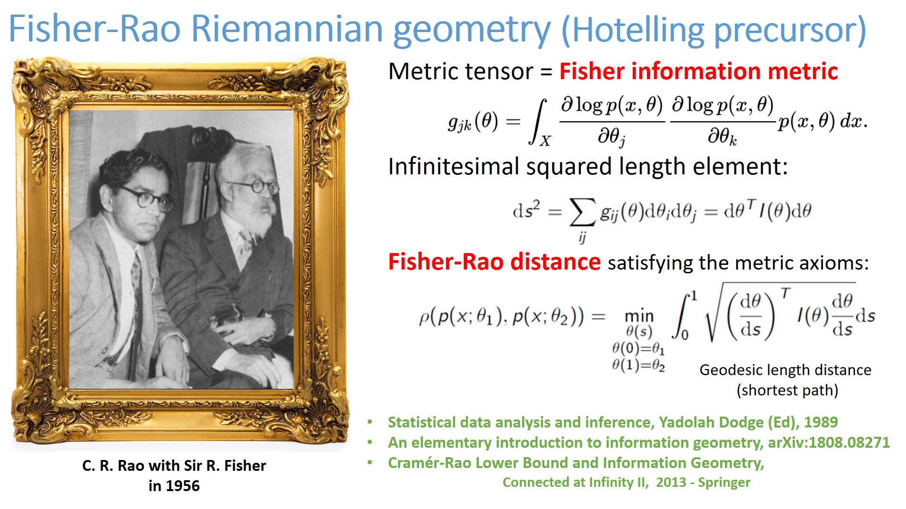
- Cramer-Rao lower bound:
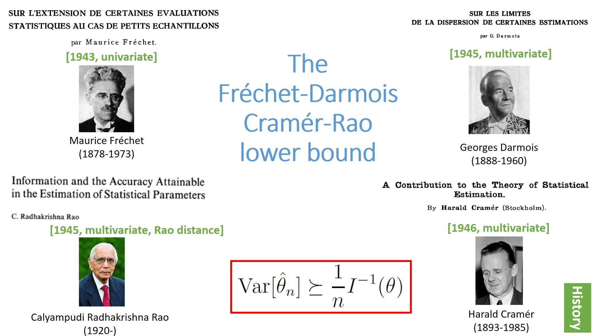
- Rao-Blackwell theorem:
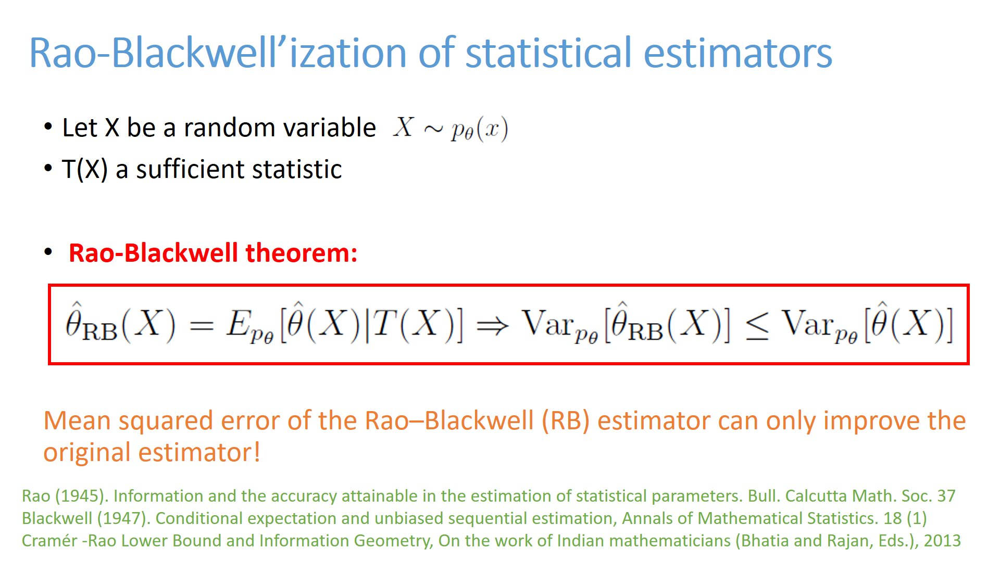
- Winner of the International Prize in Statistics, 2023
-
Cramér-Rao Lower Bound
and Information Geometry (arXiv:1301.3578), In: Bhatia, R., Rajan, C.S., Singh, A.I. (eds) Connected at Infinity II. Texts and Readings in Mathematics, vol 67. Hindustan Book Agency, Gurgaon.
doi:10.1007/978-93-86279-56-9_2
- Edited handbook of Statistics (Volume 4):
Geometry and Statistics
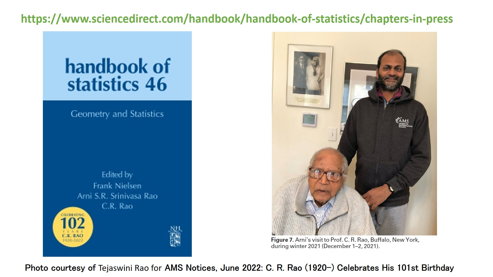
- Interview of C. R. Rao (2016)
- Edited book (21 chapters) in honor of C. R. Rao with beautiful photos:
Methodology and
Applications of Statistics: A Volume in Honor of C.R. Rao on the Occasion of his 100th Birthday, Springer.
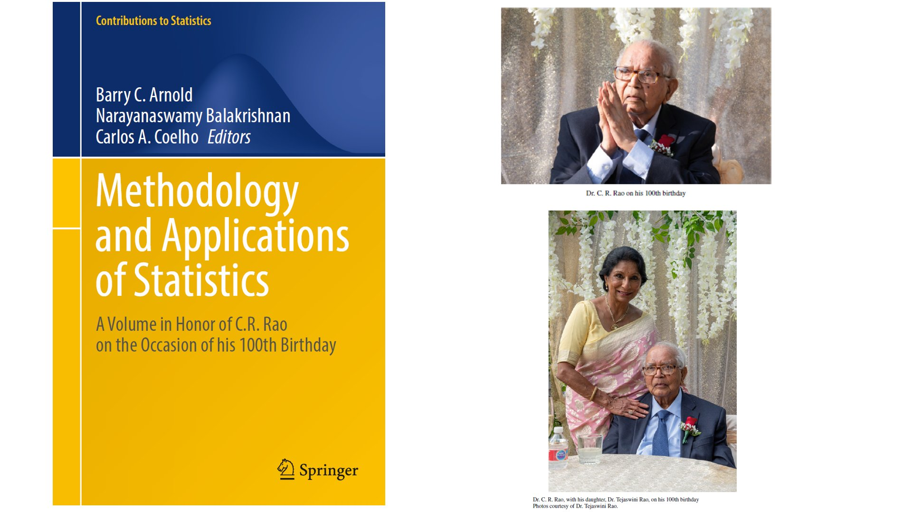
-
"A Tribute to
the Legend of Professor C. R. Rao: The Centenary Volume" (Eds).
Many nice photos of C.R. Rao with Fisher, Cramer and Blackwell, etc Medal received from G. W. Bush
- Wikipedia home page of C.R. Rao
-
A numerical approximation method for the Fisher-Rao distance between multivariate normal
distributions, arXiv:2302.08175
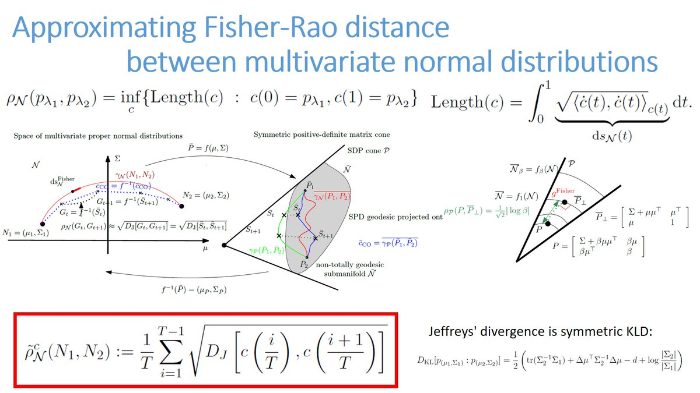
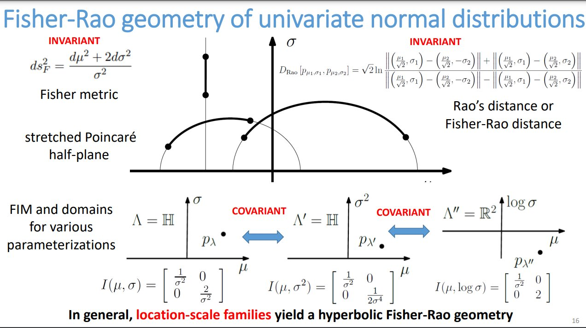
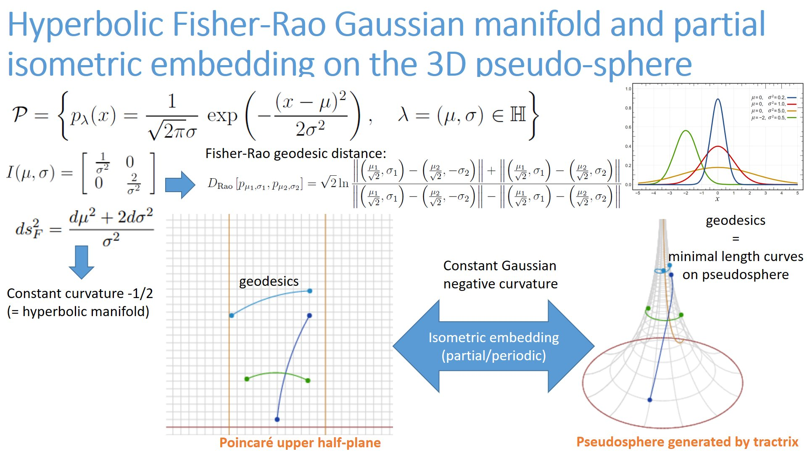
- Edited book (1964) by Prof. C. R. Rao celebrated Prof. P. C. Mahalanobis 70th birthday (Founder of the Indian Statistical Institute).
Message by prime minister of India, Jawaharlal Nehru, followed by many messages of presidents of academy of sciences, including Maurice Fréchet!
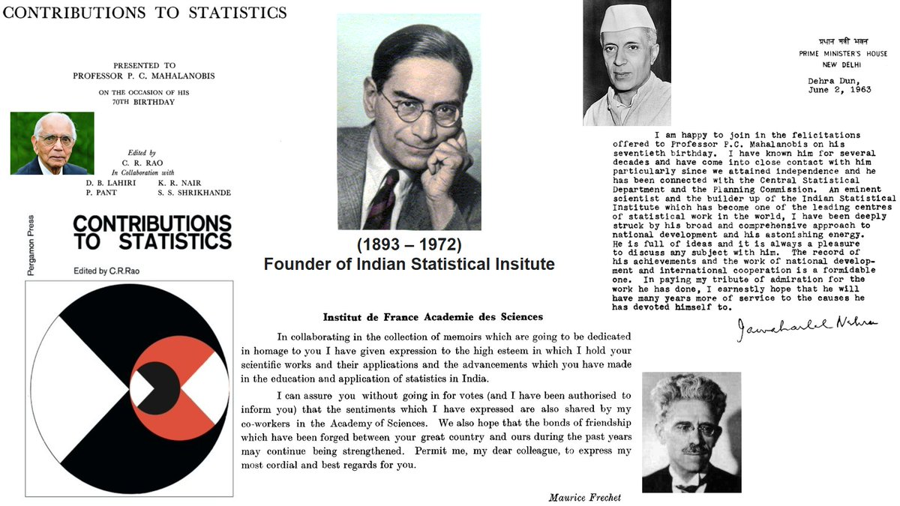
- “Statistics and Truth: Putting Chance to Work” is a book a C. R. Rao published in 1987 after having given the 3 Ramanujan Memorial Lectures in Dehli, Calcutta and Madras, the Council of Scientific & Industrial Research (CSIR) distinguished lectures
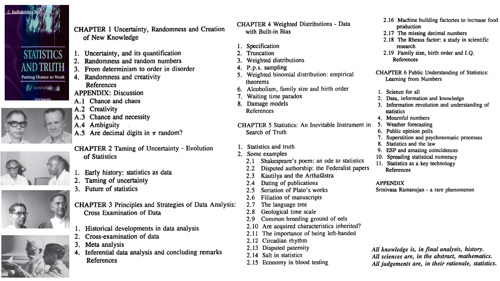
-
CR Rao published in 1996 an inequality for the expectation of harmonic means of positive random variables which is less or equal than the harmonic mean of the expectations of the RVs. This kind of inequality holds for any homogeneous mean m(x,y) such that m(1,x) is concave.
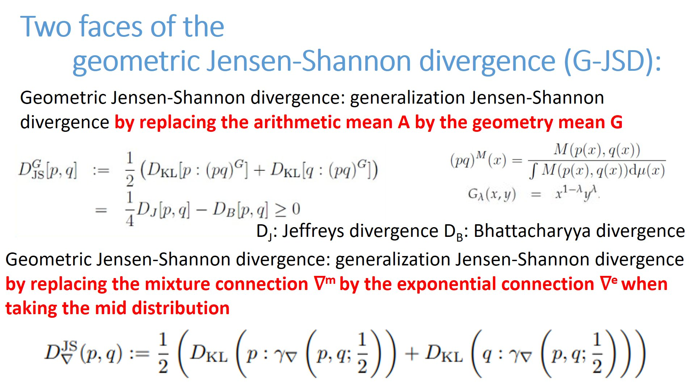
- C. Radhakrishna Rao: A Century in Statistical
Science by Nandini Kannan and Debasis Kundu